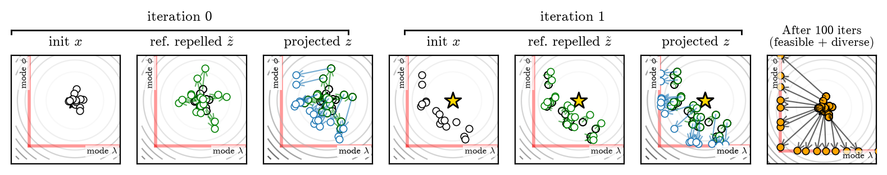
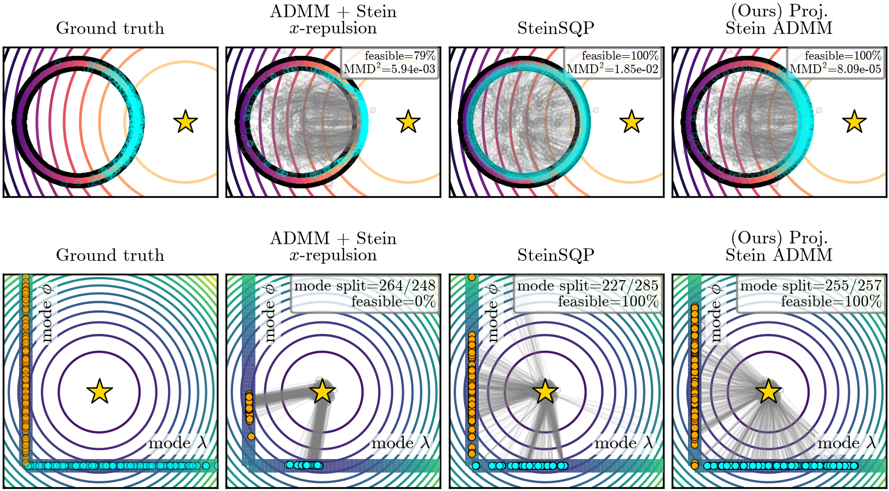
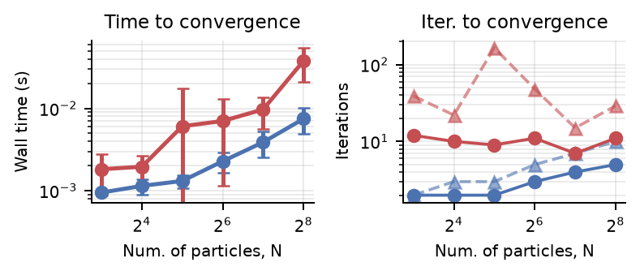
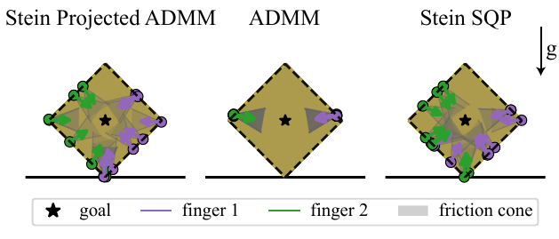
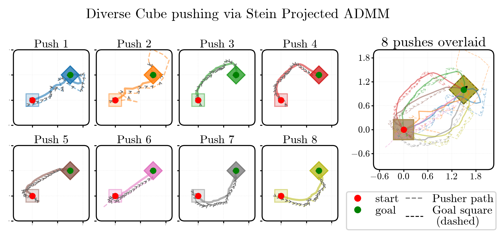
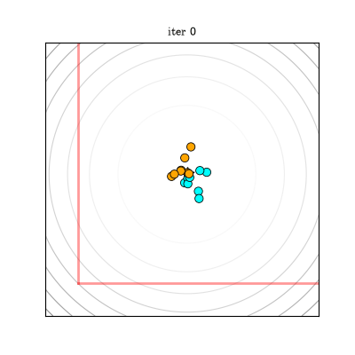
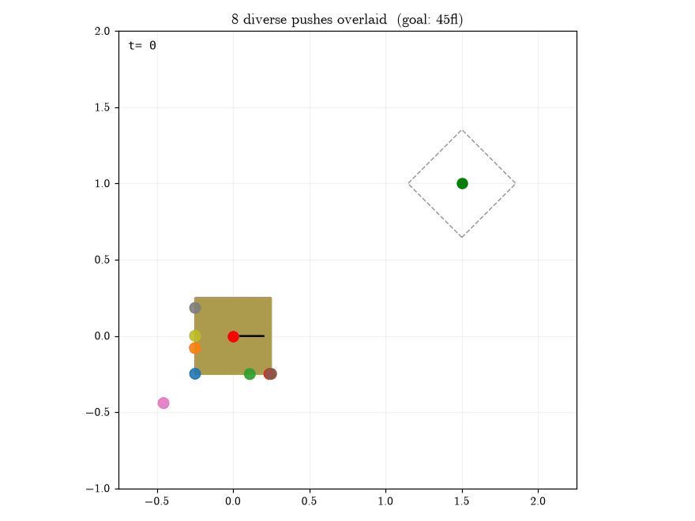
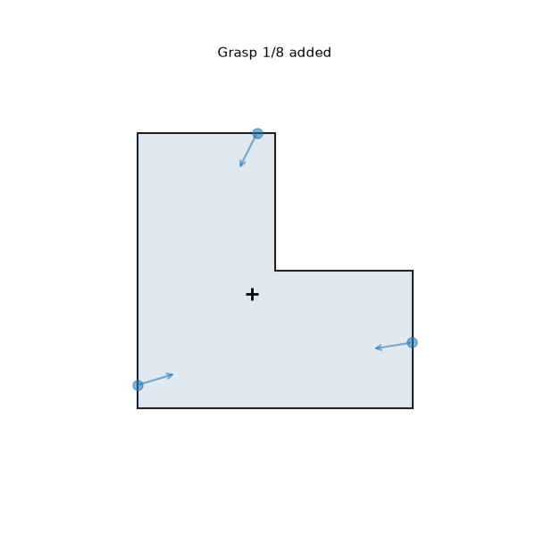
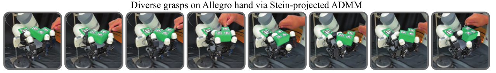

Contact-Implicit Stein Projected ADMM for Discovery of Diverse Contact-Rich Manipulation Strategies
Abstract
Contact-implicit trajectory optimization formulates contact-rich manipulation as a single constrained program; however, that single program run collapses onto one local optimum out of many equally valid contact modes, grasps, or push directions. As a consequence, the resulting manipulation strategy is reluctant to change and sensitive to initialization. In order to promote robust manipulation, this paper investigates how contact-implicit solvers can discover diverse contact-rich strategies. Our approach derives a variation of Consensus Alternating Direction Method of Multipliers (ADMM) combined with Stein variational inference methods to output a set of distinct contact-rich solutions. We find that applying the Stein repulsive force to ADMM's split variable (rather than its primal form) allows for effective coverage over the set of feasible contact strategies without prematurely stalling the solver. We demonstrate the effectiveness of our approach on a variety of contact-rich manipulation tasks, including pushing, grasping, and multi-robot handover. Last, we find the proposed solver is simpler in form and capable of discovering unique contact modes when compared with existing solvers.
Methods

Fig. 2: Overview of projected variable-splitting construction on a motivating complementarity problem with constraints 0 ≤ λ ⊥ φ ≥ 0, and objective f = ½∥[λ, φ]⊤ − [λ⋆, φ⋆]⊤∥22. The initial particles x are first split into duplicate z variables. The Stein repulsion is measured according to z to produce z̃ as a target reference which is projected onto the feasible set C. The x-update then tracks the objective while being pulled toward the feasible set C through the split variable.
Contact-implicit optimization encodes contact through complementarity constraints, so the feasible set is a union of lower-dimensional manifolds — one per contact mode. A single solve lands in one of them and discards every other equally valid strategy. Prior constrained-SVGD methods fold feasibility and diversity into the same update, so the repulsion term ends up competing with constraint satisfaction.
Our construction separates the two. The Stein repulsive force acts only on ADMM's split variable z, which is then exactly projected onto the feasible set at every outer iteration. The primal x-update therefore never sees an infeasible perturbation; it simply chases a target that is already feasible and already diverse. This requires no kernel-space quadratic program and no merit-function line search.
Results

Fig. 3: Illustrative example of N = 512 particles, on the annulus problem (top) and the complementarity problem (bottom). At large samples, the proposed approach evenly spreads particles within the feasible set within tolerance. Baseline methods have comparable performance at low-particle numbers but overemphasize certain regions with larger particle sizes.

Fig. 4: Numerical comparison on complementarity problem. (Left) Wall-clock time to first reach constraint tol = 10−4 vs. particle count N (over 9 seeds). (Right) iterations to convergence for Stein Projected ADMM (ours) and SteinSQP. Experiments were conducted on an Apple M4 Pro chip.

Fig. 6: Final overlaid configurations and finger placements in the box pivoting problem for Stein Projected ADMM (ours), the repulsion-off ADMM baseline, and SteinSQP.

Fig. 7: Diverse cube-pushing trajectories generated from Stein Projected ADMM. Each trajectory particle reaches the same goal pose via different contact strategies. (Left) Rendered particle trajectories with contact forces and points. (Right) Overlaid trajectory distribution.
Solver in Motion

Particle evolution on the complementarity problem. Starting from a single cluster, the repelled-and-projected split variable pulls the ensemble outward until particles split evenly across both feasible contact modes.

Eight diverse cube pushes executing in parallel. Every particle reaches the same 45° goal pose, but each makes and breaks contact on a different face along the way.

Quasi-static grasps accumulating on a non-convex L-shaped object. Each added grasp places its contact points and forces in a different region while holding the object in equilibrium.
Hardware Experiments

Diverse grasps on Allegro hand hardware solved with Stein-projected ADMM. We evaluate four-fingered quasi-static grasps of a non-convex object that runs in real-time (we refer the reader to the multimedia material). The executed grasp is chosen via an optimistic (best cost) heuristic from the solved candidate grasps.
Executing candidate grasps
One solve returns an ensemble of candidate grasps, and our method executes the best-quality grasp from that particle set. Below, four of the candidates are run on the hardware one at a time: each reaches the same quasi-static equilibrium on the same non-convex object, but commits to a different set of finger placements and contact forces. Each grasp is then disturbed by hand to check that it actually holds.